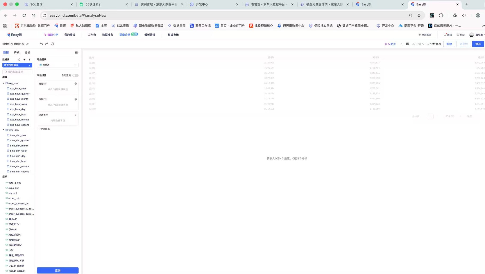

用工作台
完成第一轮自查
现在有 EasyBI 和分析工作台，运营不需要优先写 SQL。更重要的是：知道要看什么指标、怎么选时间和维度、看到结果后怎么判断下一步。
00 这节课不讲代码
不讲
不讲 SQL，不讲建表，不讲数仓分层，不讲复杂关联。
只讲
怎么在 EasyBI 探索分析里，把一个业务问题查到第一轮结论。
01 先拿到数据集权限
EasyBI 的核心不是“会不会点按钮”，而是你有没有对应数据集权限，以及是否知道每个字段/指标代表什么。
| 要做什么 | 怎么做 | 说明 |
|---|---|---|
| 进入工具 | 打开 easybi.jd.com | 进入 EasyBI 后使用“探索分析”模块 |
| 申请权限 | 找分析师或数据集负责人开通数据集权限 | 比如保单、续保、投放、权益、触达相关数据集 |
| 确认口径 | 问清常用指标、字段含义、更新时间 | 比如 T+30 续保率、到期保费、保单毛利分别怎么算 |
| 开始查询 | 有权限后，选择数据集，拖指标、维度和筛选条件 | 优先用工作台完成第一轮自查 |
02 认识探索分析页面
页面不用一次全懂，先认 5 个区域。

截图用于说明页面结构：左侧是字段区，中间是配置和结果区，右上角通常有保存、下载、分析等操作。
| 页面区域 | 运营要理解什么 |
|---|---|
| 数据集 / 字段区 | 这里决定你能查哪些数据。没有权限或没有字段，就需要找分析师补。 |
| 维度 | 用来“按什么拆开看”，比如日期、渠道、产品、城市、用户层级。 |
| 指标 | 用来看结果大小，比如到期保费、续保保费、保单数、保单毛利。 |
| 过滤条件 | 用来限定范围，比如时间、渠道、产品、是否排除测试数据。 |
| 查询结果 | 看趋势、排名、分组差异，再决定下一步动作。 |
03 查询前，先打开查数清单
这张检查表嵌在正式课程这里用：真正点查询前，先确认自己没有漏掉时间、范围、维度。
04 一次查询的标准步骤
1. 先选数据集
例如保单数据集、续保数据集、投放数据集。选错数据集，后面都白查。
2. 再选指标
先选主指标，比如 T+30 保费续保率；再看分子分母，比如到期保费、续保保费。
3. 加筛选条件
明确时间、产品、渠道、人群范围。先别什么都切，越切越乱。
4. 拖维度拆开看
先按最可能影响结果的维度拆，比如渠道或产品。
5. 点击查询
先看整体趋势，再看分组差异。不要只盯某一天。
6. 记录结论
写清楚“哪里变了、变化从什么时候开始、可能影响下一步什么动作”。
05 示例：续保率下降，EasyBI 先怎么查
目标不是把所有数据都拉出来，而是先判断下降来自哪里。
| 步骤 | EasyBI 里怎么做 | 要回答的问题 |
|---|---|---|
| 第一步 | 选择续保相关数据集，时间选近 8 周 | 续保率是真的连续下降，还是单日波动？ |
| 第二步 | 指标选择：T+30 保费续保率、到期保费、T+30 续保保费 | 是分母变了，还是分子变了？ |
| 第三步 | 维度选择：渠道 | 是所有渠道都下降，还是某个渠道拖低整体？ |
| 第四步 | 如果有字段，再看自动扣费成功保费、用户主动重新投保保费 | 续保保费下降来自自动扣费，还是来自用户主动重新投保？ |
| 第五步 | 如果工作台没有支付失败/触达明细，再找分析师 | 需要补什么数据，才能判断下一步动作？ |
06 看结果时，不要急着下结论
先看趋势
是某一天突然异常，还是连续几周下降？单日异常先谨慎判断。
再看分组
是整体都变差，还是某个渠道、产品、人群变差？
最后看动作
如果是入口问题，改入口；如果是提醒问题，改提醒；如果是支付问题，查扣费链路。
07 什么时候找分析师
| EasyBI 可以先自己查 | 需要找分析师支持 |
|---|---|
| 已有指标的趋势、分组、排名 | 没有对应数据集权限 |
| 按日期、渠道、产品、人群筛选 | 工作台里没有需要的字段或指标 |
| 看分子分母变化 | 需要把触达、点击、支付、保单多张表串起来 |
| 导出结果做简单复核 | 需要沉淀长期看板或新增固定口径 |
08 权限申请和支持需求怎么写
申请数据集权限
我需要用 EasyBI 做续保问题自查，麻烦帮我开通续保相关数据集权限。主要会看 T+30 保费续保率、到期保费、T+30 续保保费，并按日期、渠道、产品拆分。
找分析师补数据
我在 EasyBI 里看到渠道 A 的 T+30 保费续保率从 5 月 12 日开始下降，但工作台看不到自动扣费失败原因。麻烦帮我补渠道 A 近 8 周的扣费失败原因分布。
09 现场试查：只做第一步
打开 EasyBI 前，先定一个查数方向
现场只确认三件事：我要看哪个指标、按哪个维度拆、如果查不到要补什么字段。